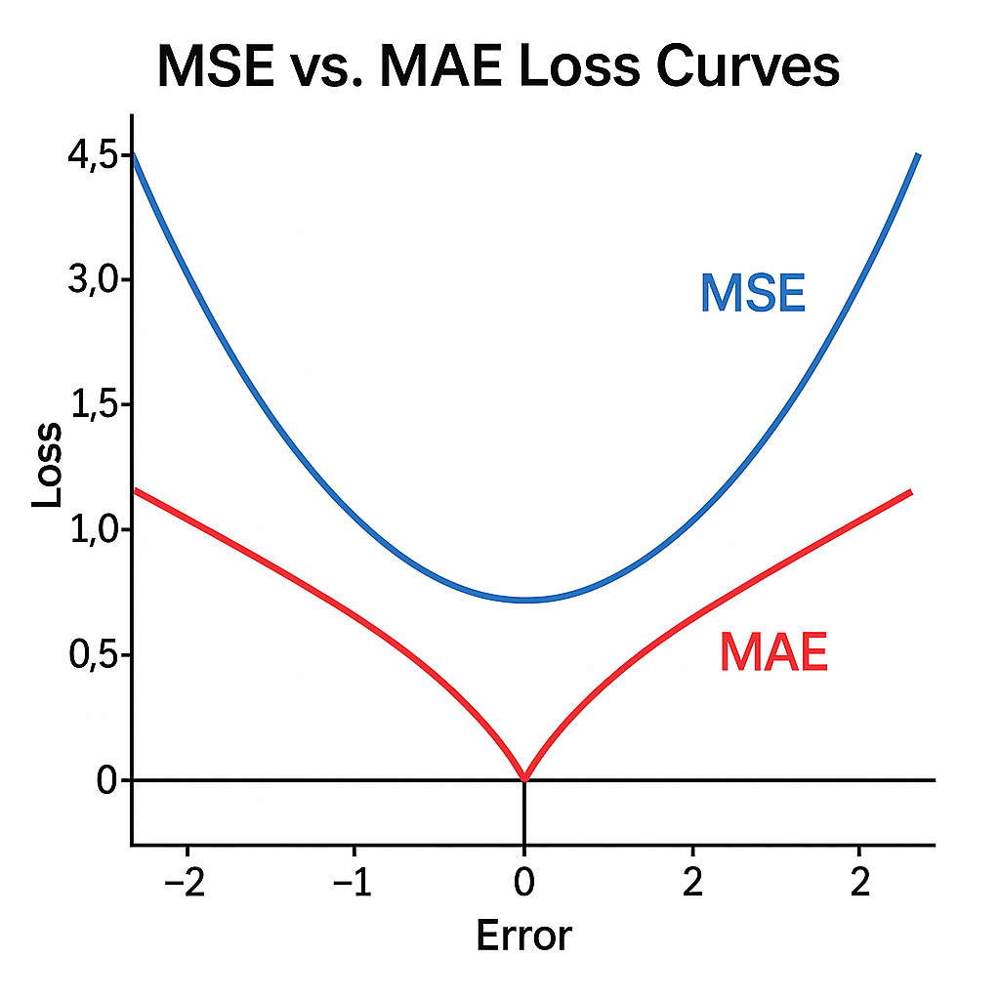
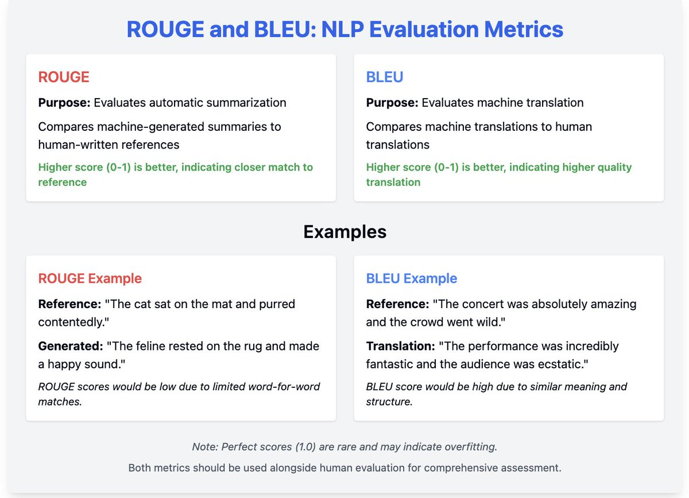
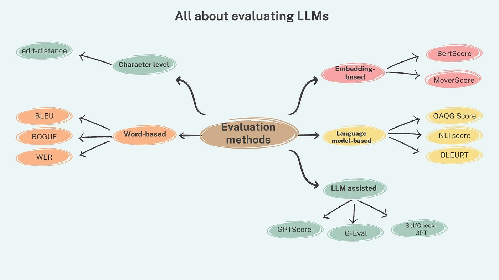

The Anatomy of AI Evaluation: Moving Beyond Accuracy
Training a model is only half the battle; evaluating it correctly is what determines its success in the real world. In the industry, a model boasting 99% accuracy can still be a catastrophic failure if it is optimizing for the wrong metric.
As we transition from classical Machine Learning (ML) to Natural Language Processing (NLP) and modern Large Language Models (LLMs), our evaluation frameworks must evolve. This guide breaks down the core metrics used across the industry, the mathematics behind them, and exactly when to use them.
1. The Foundation: Classification Metrics
Before diving into complex deep learning metrics, we must ground ourselves in the Confusion Matrix. It categorizes predictions into True Positives (TP), True Negatives (TN), False Positives (FP), and False Negatives (FN).

Accuracy
Accuracy is the most intuitive metric, representing the ratio of correctly predicted observations to the total observations.
- The Intuition: "Out of everything the model looked at, how many did it get right?"
- When to use it: Use accuracy only when your dataset is perfectly balanced and the cost of false positives and false negatives is roughly the same.
Precision
Precision calculates the proportion of positive identifications that were actually correct.
- The Intuition: "When the model cries wolf, how often is there actually a wolf?" It measures the quality of your positive predictions.
- When to use it: When the cost of a False Positive is high (e.g., routing a highly important business email to the spam folder).
Recall (Sensitivity)
Recall calculates the proportion of actual positives that were identified correctly.
- The Intuition: "Out of all the actual wolves out there, how many did the model find?" It measures the quantity of positive predictions.
- When to use it: When the cost of a False Negative is high (e.g., in medical diagnostics, missing a sick patient).
F1-Score
The F1-Score is the harmonic mean of Precision and Recall.
- The Intuition: A standard average treats all values equally, but a harmonic mean punishes extreme values. It forces the model to balance both precision and recall.
- When to use it: When you have an imbalanced dataset and need a single metric to evaluate performance.
2. Continuous & Deep Learning Errors
When a model outputs continuous numbers (Regression) or probability distributions (Neural Networks), binary classification metrics no longer apply.

MSE & MAE
- MSE (Mean Squared Error): Squares the errors, meaning a prediction that is off by 10 points is penalized 100 times more than a prediction off by 1 point. Use when large outliers are catastrophic.
- MAE (Mean Absolute Error): Averages the absolute differences. Use when you want a robust metric that doesn't get skewed by a few massive outliers.
Cross-Entropy Loss (Log Loss)
The standard loss function for classification in deep learning and Transformers.
3. Legacy NLP Sequence Metrics
Before the era of Generative AI, NLP tasks like machine translation and text summarization relied on exact-match overlap metrics.

- BLEU: Measures how many words in the machine's output appear in a human reference text. It is essentially Precision for text. Historically the gold standard for Machine Translation.
- ROUGE: Measures how many words from the human reference text appeared in the machine's output. It is essentially Recall for text. The industry standard for Text Summarization evaluation.
4. The Generative Era: LLM & Transformer Metrics
Evaluating modern Transformers (like GPT-4 or Llama 3) is uniquely challenging because there is no single "correct" response to an open-ended prompt.

Perplexity
Perplexity evaluates the quality of a language model's internal probability distribution during training. A lower perplexity means the model confidently predicts the next word correctly (it is less "surprised" by real human text).
LLM-as-a-Judge
Because semantic meaning cannot be captured by exact-word matches like BLEU, the industry now uses larger, superior LLMs to evaluate the outputs of smaller LLMs based on a custom grading rubric.
RAGAS (Retrieval Augmented Generation Assessment)
When building RAG systems, you must evaluate both the search engine and the LLM. RAGAS breaks this into distinct metrics:
- Faithfulness: Did the LLM hallucinate, or did it stick strictly to the facts provided in the retrieved context?
- Answer Relevance: Did the generated answer actually address the user's initial prompt?
- Context Precision: Did the vector database retrieve the correct documents for the LLM to read in the first place?